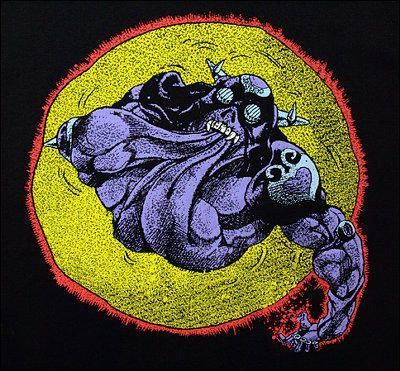

お疲れさまでした！
謎解きとか、ボドゲももっと一緒にやりたかったです。
すーさんは部室で会うことも比較的多かったので いなくなったら寂しくなるなって思います。
すーさんのいる部室の雰囲気が好きでした。。
ジャグリングめちゃくちゃ巧いのに あんまり教われなかったのが心残りです。
これからも公演とか見に来てください！
ただ遊びに来るのも大歓迎です。
最後に、キーワードはクリームでしたが、 ジョジョ3部のジョセフの言葉を贈ります。
『また会おうッ！わしのことが嫌いじゃあなけりゃあな！』
